Inhalt Index DeskTop Bronstein

 Integralrechnung Unbestimmtes Integral Integration irrationaler Funktionen Elliptische Integrale
Integralrechnung Unbestimmtes Integral Integration irrationaler Funktionen Elliptische Integrale


Die zu (8.22a, 8.22b, 8.22c) gehörigen bestimmten Integrale mit der unteren Integrationsgrenze Null haben die folgenden Bezeichnungen erhalten:
| 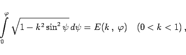 | (8.23b) |
| 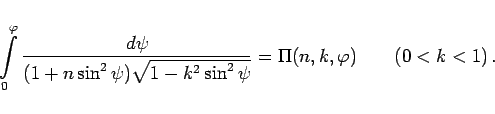 | (8.23c) |
Man nennt diese Integrale unvollständige elliptische Integrale 1., 2. und 3. Gattung. Für 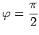 heißen die ersten beiden Integrale vollständige elliptische Integrale, und man kennzeichnet sie durch
In den Tabellen Elliptische Integrale, Teile 1, 2, 3 sind für die unvollständigen und vollständigen elliptischen Integrale 1. und 2. Gattung  , 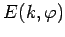 sowie K und E Wertetabellen angegeben.
, 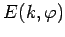 sowie K und E Wertetabellen angegeben.
| Beispiel |
|
Die Berechnung des Umfanges der Ellipse führt auf ein vollständiges elliptisches Integral 2. Gattung als Funktion der numerischen Exzentrizität 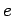. Für 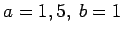 folgt 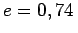. Wegen e = k = 0,74 liest man aus der Tabelle Elliptische Integrale, Teil 3 ab: 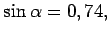 d.h., 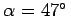, und 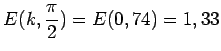. Daraus folgt 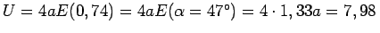. Die Berechnung mit der Näherungsformel (3.351c) liefert den Wert 7,93. |